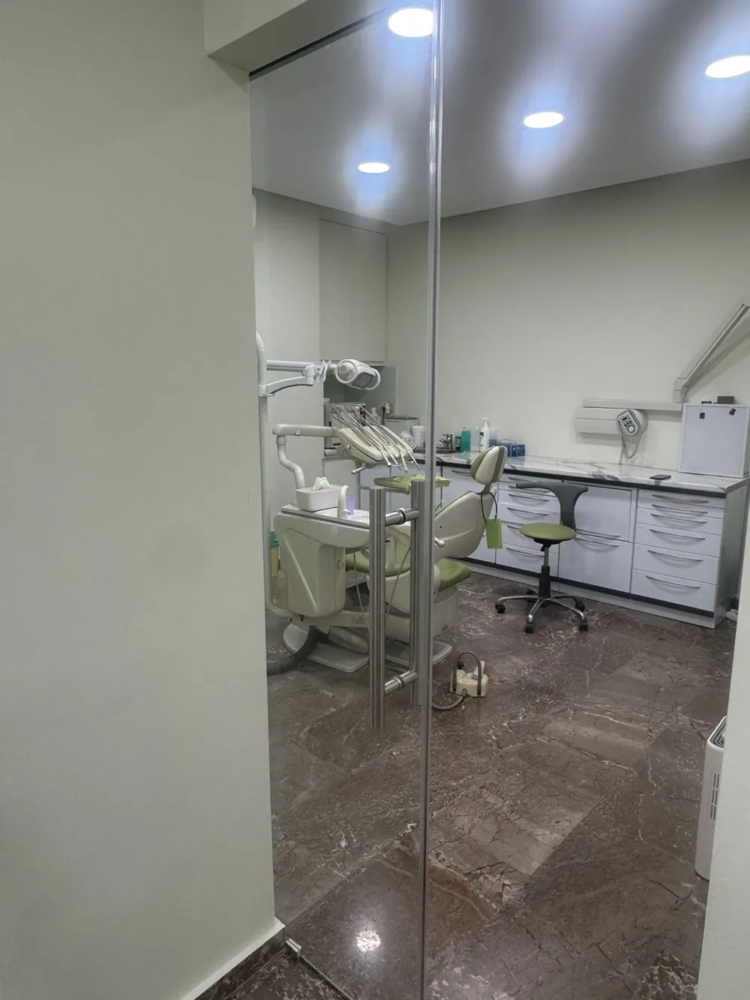
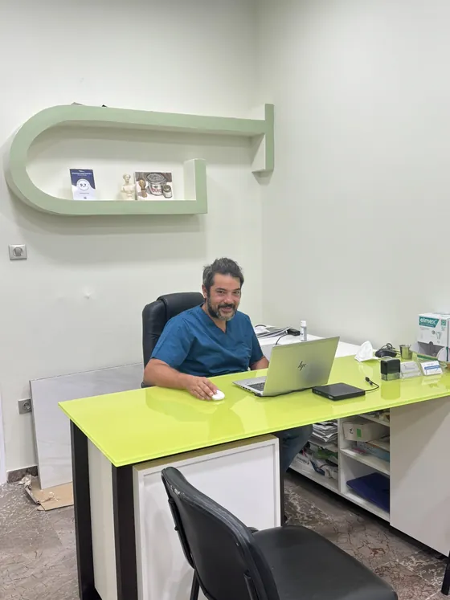
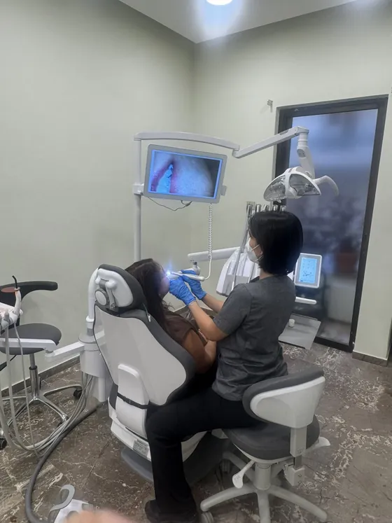

01
Καθαρισμός δοντιών
Εδώ ξεχωρίζει το ιατρείο. Αφαίρεση πέτρας και χρωστικών με υπερήχους, ήπια και μεθοδικά — οι περισσότεροι ασθενείς λένε ότι δεν κατάλαβαν τίποτα.
Χειρουργός Οδοντίατρος · Αθήνα & Πειραιάς
Ο Θωμάς Κουράκος φροντίζει, αποκαθιστά και προστατεύει το χαμόγελό σας. Θα σας πει τι βλέπει και τι κοστίζει πριν ξεκινήσει οτιδήποτε — σε δύο ιατρεία, στα Κάτω Πατήσια και στο Κερατσίνι.


Ο ιατρός
Πτυχιούχος της Οδοντιατρικής Σχολής του Πανεπιστημίου Αθηνών, με δύο ιατρεία και έναν κανόνα: κανείς δεν φεύγει από εδώ με απορίες.
Ο Θωμάς Κουράκος σπούδασε Οδοντιατρική στο Εθνικό και Καποδιστριακό Πανεπιστήμιο Αθηνών και από τότε συνεχίζει να εκπαιδεύεται — δεκάδες σεμινάρια, σε όλο το φάσμα της γενικής και της αισθητικής οδοντιατρικής.
Καλύπτει τα πάντα, από τον καθαρισμό και το σφράγισμα μέχρι τις όψεις ρητίνης, την προσθετική και την ολική οδοντοστοιχία. Έχει επίσης εξειδικευτεί στην αντιμετώπιση του ροχαλητού με ενδοστοματικούς νάρθηκες — μια θεραπεία που λίγοι οδοντίατροι προσφέρουν.
Στις κριτικές των ασθενών του επαναλαμβάνονται συνέχεια τα ίδια δύο πράγματα: ότι δεν πόνεσαν και ότι κατάλαβαν τι τους έγινε. Αυτό είναι, στην ουσία, όλο το ζητούμενο.
Υπηρεσίες
Από τον ετήσιο καθαρισμό μέχρι την ολική αποκατάσταση. Κάθε θεραπεία εξηγείται πριν ξεκινήσει — τι θα γίνει, πόσο θα πάρει και πόσο θα κοστίσει.
01
Εδώ ξεχωρίζει το ιατρείο. Αφαίρεση πέτρας και χρωστικών με υπερήχους, ήπια και μεθοδικά — οι περισσότεροι ασθενείς λένε ότι δεν κατάλαβαν τίποτα.
02
Ελεγχόμενη λεύκανση στο ιατρείο, με αποτέλεσμα που φαίνεται φυσικό και όχι τεχνητά λευκό. Η ευαισθησία προλαμβάνεται από την πρώτη συνεδρία.
03
Διόρθωση σχήματος, χρώματος ή κενών σε μία επίσκεψη, χωρίς τρόχισμα του δοντιού. Η πιο διακριτική αισθητική παρέμβαση που υπάρχει.
04
Αποκατάσταση τερηδόνας με σύγχρονες ρητίνες, στο ακριβές χρώμα του δοντιού σας. Καμία γκρίζα σκιά, κανένα σημάδι ότι έγινε κάτι.
05
Αιμορραγία στο βούρτσισμα σημαίνει φλεγμονή, όχι «σκληρή βούρτσα». Θεραπεία, σταθεροποίηση και ένα πλάνο για να μην ξανασυμβεί.
06
Απλές και χειρουργικές εξαγωγές με ήπιους χειρισμούς και σαφείς οδηγίες για μετά — γιατί οι πρώτες 24 ώρες κάνουν τη διαφορά.
07
Προστασία και αποκατάσταση δοντιού που έχει χάσει πολύ υλικό, με ακρίβεια εφαρμογής ώστε να μην ενοχλεί ούτε να παγιδεύει τροφές.
08
Ολικές και μερικές οδοντοστοιχίες με φυσική εμφάνιση και σταθερή εφαρμογή. Στόχος: να τρώτε και να μιλάτε χωρίς να το σκέφτεστε.
09
Το φινίρισμα μετά τον καθαρισμό: λεία επιφάνεια που μαζεύει λιγότερη πλάκα και ενισχυμένη αδαμαντίνη απέναντι στην τερηδόνα.
10
Ευθυγράμμιση δοντιών για κάθε ηλικία, με σύγχρονους μηχανισμούς και ρεαλιστικό χρονοδιάγραμμα από την πρώτη κιόλας συζήτηση.
11
Ενδοστοματικός νάρθηκας στα δικά σας μέτρα, που κρατά ανοιχτό τον αεραγωγό. Για εσάς — και για όποιον κοιμάται δίπλα σας.
12
Ένα ραντεβού τον χρόνο κοστίζει όσο ένα σφράγισμα και συνήθως το αποτρέπει. Το καλύτερο πρόβλημα είναι αυτό που δεν προλαβαίνει να γίνει.
Διάγνωση
Η ενδοστοματική κάμερα προβάλλει το δόντι σας στην οθόνη, μεγεθυμένο. Δεν είναι για εντυπωσιασμό: είναι ο μόνος τρόπος να καταλάβετε μόνοι σας γιατί προτείνεται μια θεραπεία — και να πείτε όχι, αν δεν σας πείσει.

Ο χώρος
Σύγχρονος εξοπλισμός, αυστηρή αποστείρωση και ένας χώρος όπου περιμένετε ήρεμα μέχρι να σας φωνάξουν.
Η έδρα στη φωτογραφία 03 δεν είναι διακοσμητική. Είναι μια πραγματική οδοντιατρική έδρα του περασμένου αιώνα, διατηρημένη όπως ήταν — μια υπενθύμιση για το πόσο έχει αλλάξει η οδοντιατρική, και για το γιατί σήμερα δεν υπάρχει λόγος να φοβάται κανείς την οδοντιατρική καρέκλα.
Κριτικές ασθενών
Όλες οι κριτικές που ακολουθούν είναι επαληθευμένες αξιολογήσεις ασθενών στο doctoranytime, ακριβώς όπως τις έγραψαν οι ίδιοι.
9,9/10
Μέση βαθμολογία σε δεκάδες επαληθευμένες αξιολογήσεις ασθενών στο doctoranytime.
Συχνές ερωτήσεις
Δεν βρίσκετε αυτό που ψάχνετε; Πάρτε τηλέφωνο — απαντάμε και χωρίς ραντεβού.
Επικοινωνία
Διαλέξτε αυτό που σας βολεύει και κλείστε ραντεβού τηλεφωνικά ή online. Οι επισκέψεις γίνονται πάντα κατόπιν ραντεβού.
Ιατρείο 1 · Αθήνα
Τζιβανοπούλου 1-3, Κάτω Πατήσια, Αττική
210 711 7514Ιατρείο 2 · Πειραιάς
Θυμάτων Κατοχής 37, Κερατσίνι 187 57, Αττική
210 744 9553Η πρώτη επίσκεψη ξεκινά πάντα με μια ήρεμη κουβέντα: τι σας απασχολεί, τι χρειάζεται και τι κοστίζει. Τίποτα δεν γίνεται πριν συμφωνήσετε.